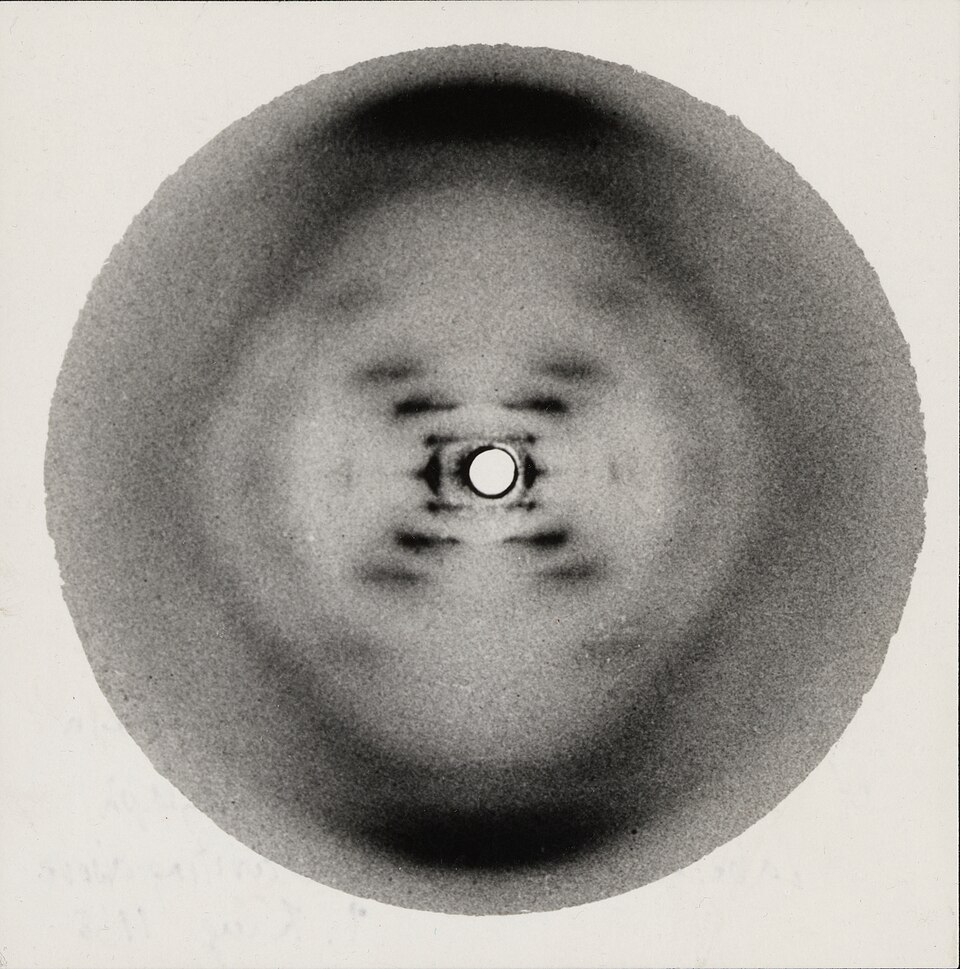
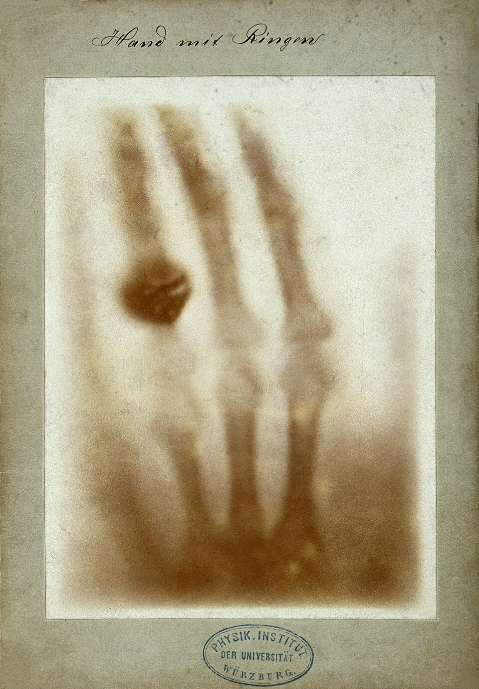
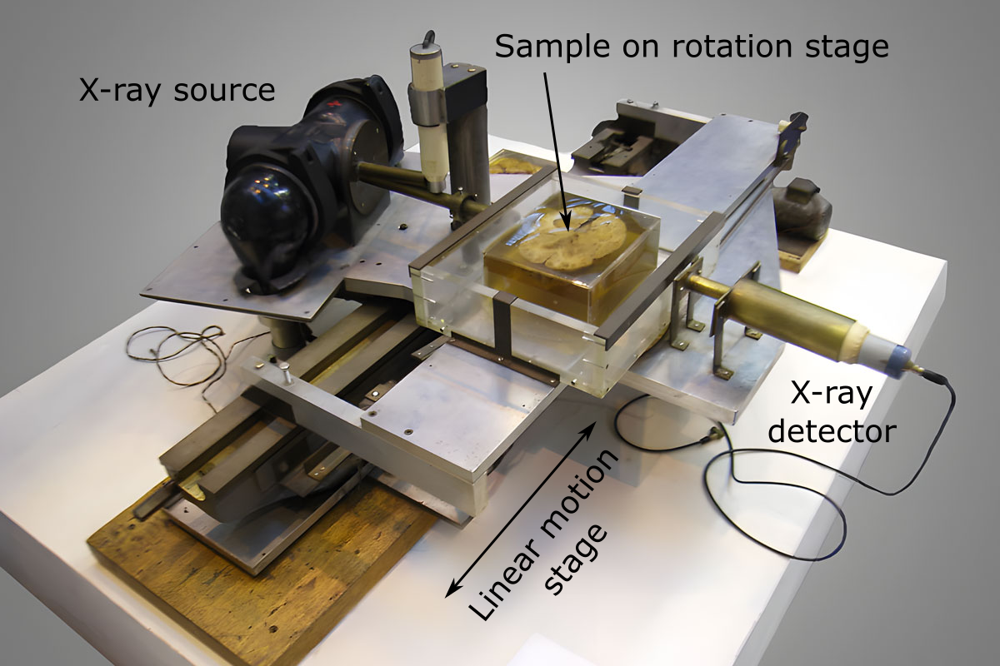
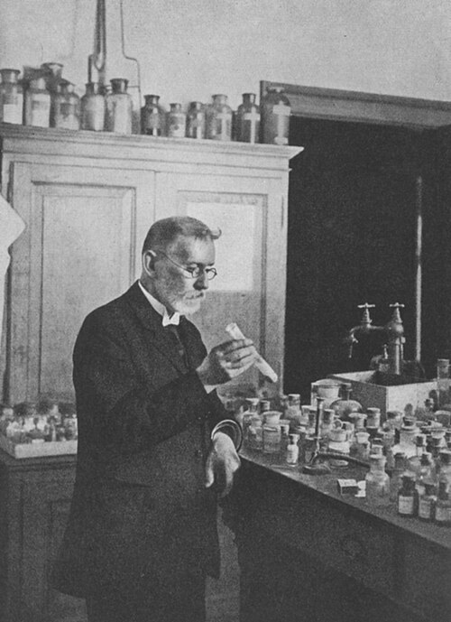
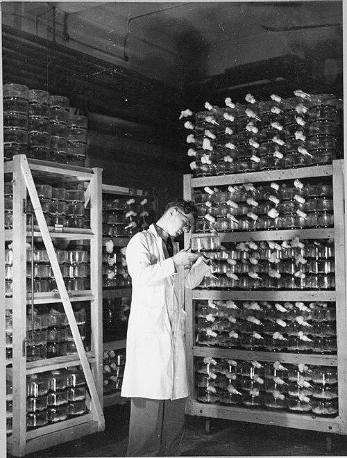
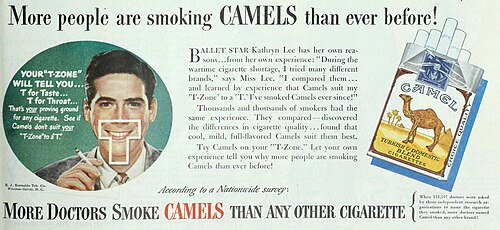
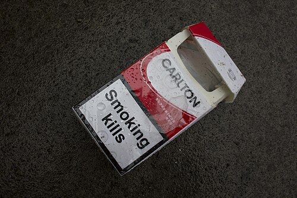

Modern
Paper 1: Medicine Through Time with the Western Front
Course Textbook
Enquiry: How has medicine changed from c1250 to the modern day?
Contents
|
Lesson 1: KT4.1: Ideas on Causes: Genetics, DNA & The Human Genome Project (c.1953–present)
|
|
|
Lesson 2: KT4.2: Lifestyle Factors & The Technological Revolution in Diagnosis (c.1900–present)
|
|
|
Lesson 3: KT4.3: The Search for Magic Bullets, High-Tech Treatments & The Birth of the NHS (1909–1948)
|
|
|
Lesson 4: KT4.4: Case Study 1: The Antibiotic Revolution: Fleming, Florey & Chain and Penicillin (1928–1945)
|
|
|
Lesson 5: KT4.5: Case Study 2: Public Health & The Fight Against Lung Cancer (c.1950–present)
|
|
L1: KT4.1: Ideas on Causes: Genetics, DNA & The Human Genome Project (c.1953–present)[[SRC_MARKER:L15_Start]]
Learning Objectives
Explain how the rediscovery of Mendel’s laws revealed the mystery of hereditary disease.
Analyse how Rosalind Franklin’s Photograph 51 provided mathematical proof of DNA’s helical structure.
Examine how Watson and Crick’s double helix model explained biological reproduction and base pairing.
Evaluate the medical milestone of the international Human Genome Project (1990–2003).
Assess the diagnostic-therapeutic lag between predictive genetic screening and clinical gene therapy.
For thousands of years, physicians understood that deadly illnesses could haunt family trees across generations, yet the biological mechanism remained an impenetrable mystery. The mid-twentieth-century discovery of the molecular structure of DNA, followed by the international Human Genome Project, unlocked the fundamental code of life—transforming medicine from passive symptom management into predictive, personalized genomic science.
Did you know?
- If unwound and tied end-to-end, the DNA inside a single human cell would stretch approximately six feet long, yet it is packed into a nucleus smaller than a pinpoint.
- Rosalind Franklin’s Photograph 51 required 62 continuous hours of X-ray radiation in a damp basement room with 75% relative humidity to keep the DNA fibers hydrated.
- The international Human Genome Project sequenced over 3 billion base pairs of DNA, completed in 2003 two years ahead of schedule and under budget.
Vocabulary Check
The Odd One Out: Circle ONE term that does not belong with the others. Explain your reasoning: What historical connection links the other terms, and why is your chosen term different?
DNA (Deoxyribonucleic Acid) | X-ray Crystallography | Human Genome Project | Hereditary Disease | Base Pairing
Teacher Model / Pupil Reasoning:
[[SRC_MARKER:L15_Source_0]]
Source S1: Rosalind Franklin’s Photograph 51 (May 1952)

Photograph 51: X-ray diffraction photograph of crystallized DNA, taken by Rosalind Franklin and Raymond Gosling at King’s College London in May 1952.
[[SRC_MARKER:L15_Source_1]]
Source S2: Watson and Crick’s 1953 Double Helix Model
The original 1953 double-helix molecular model built from sheet-metal bases and brass rods by James Watson and Francis Crick, preserved at the Science Museum, London.
[1.1] By the opening decades of the twentieth century, Louis Pasteur and Robert Koch’s Germ Theory had conquered infectious medicine, explaining how external bacteria caused cholera, tuberculosis, and anthrax. Yet physicians were confronted by a profound biological mystery: why did fatal illnesses such as cystic fibrosis, sickle cell anemia, and hemophilia recur relentlessly across generations of the same family without any microbial infection? In 1900, European botanists rediscovered the forgotten 1866 hybridization experiments of Augustinian monk Gregor Mendel, which demonstrated that physical characteristics were transmitted from parents to offspring in precise mathematical ratios via invisible biological units termed "genes."
[1.2] Medical researchers recognized that humanity possessed an internal biological blueprint; however, the physical nature of the gene remained an impenetrable enigma. Microscopic staining revealed thread-like chromosomes inside the cell nucleus, but biochemists were locked in debate over whether genetic blueprints were stored in complex chromosomal proteins or in a puzzling, overlooked nucleic acid called deoxyribonucleic acid (DNA). Without deciphering the molecular geometry of DNA, doctors could neither explain how genetic information replicated during cellular division nor comprehend how microscopic copying errors caused catastrophic hereditary mutations.
[[SRC_MARKER:L15_Source_3]]
Source S3: Rosalind Franklin’s Photograph 51 (May 1952)
Photograph 51: X-ray diffraction photograph of crystallized DNA, taken by Rosalind Franklin and Raymond Gosling at King’s College London in May 1952.
Q1. How does the sharp X-pattern in Franklin’s X-ray photograph mathematically prove that DNA is a helical coil rather than a flat chain, and why was this physical evidence critical for Watson and Crick’s model?
[2.1] In January 1951, physical chemist Rosalind Franklin joined King’s College London, bringing world-class expertise in X-ray crystallography—a demanding technique whereby high-energy X-ray beams were diffracted through crystallized biological fibers onto photographic film. Working alongside PhD student Raymond Gosling in a damp, subterranean basement laboratory, Franklin perfected a micro-camera setup, exposing calf thymus DNA to 62 continuous hours of radiation under controlled humidity. In May 1952, Franklin captured "Photograph 51" (Source A), a stark, razor-sharp diffraction image displaying an unmistakable dark X-shaped cross of reflections that mathematically proved DNA formed a double-stranded helical cylinder.
[2.2] Severe institutional discord paralyzed the King’s biophysics unit. Maurice Wilkins, a senior physicist who mistakenly regarded Franklin as his technical assistant rather than an independent investigator, clashed with her rigorous empirical standards. In January 1953, without Franklin’s knowledge or permission, Wilkins showed Photograph 51 to James Watson, an ambitious 24-year-old American biologist visiting from Cambridge. Watson later recorded that his jaw dropped and his pulse raced upon viewing the print: the distinct X-cross pattern immediately provided Watson and his Cambridge collaborator Francis Crick with the exact mathematical dimensions required to solve the molecule.
[[SRC_MARKER:L15_Source_4]]
Source S4: Watson and Crick’s 1953 Double Helix Model
The original 1953 double-helix molecular model built from sheet-metal bases and brass rods by James Watson and Francis Crick, preserved at the Science Museum, London.
Q2. Why was proving the exact base-pairing mechanism (A-T and C-G) the decisive breakthrough in understanding how genetic hereditary information replicates and passes between generations?
[3.1] Armed with Franklin’s experimental measurements, Watson and Crick spent frantic weeks in their Cambridge Free School Lane laboratory assembling sheet-metal cutouts and brass wire rods on an upright stand. In March 1953, they completed a magnificent three-dimensional model (Source B) revealing that DNA was a "double helix"—two antiparallel sugar-phosphate backbones intertwined around a central axis, linked by complementary nitrogenous base pairs: Adenine (A) bonded strictly to Thymine (T), and Cytosine (C) bonded strictly to Guanine (G).
[3.2] This base-pairing rule instantly solved the mechanism of biological reproduction: during cell division, the two strands unzip, and each acts as a template to synthesize an identical replica. Watson and Crick famously burst into The Eagle pub, proclaiming they had discovered "the secret of life." In April 1953, they published their 900-word breakthrough paper in Nature, opening the modern era of molecular genetics.
[4.1] Deciphering the structure of DNA was the catalyst for the greatest collaborative expedition in biomedical history: the Human Genome Project. Launched in 1990 as an international public consortium led by James Watson and Francis Collins and co-funded by the UK Wellcome Trust Sanger Institute, researchers across Britain, the United States, France, Germany, and Japan spent thirteen years decoding the genetic instruction manual.
[4.2] Completed in April 2003, the project successfully mapped all 3 billion chemical base pairs across humanity’s 20,000–25,000 genes, publishing the data free online. This monumental digital reference sequence allows geneticists to pinpoint specific faulty mutations responsible for over 4,000 inherited disorders, including the BRCA1 and BRCA2 genes that dramatically elevate hereditary breast and ovarian cancer risks.
[5.1] The genetic revolution fundamentally transformed modern clinical practice from reactive symptom management into predictive, personalized medicine. Armed with genomic sequencing, contemporary doctors no longer rely on standardized treatments; instead, individuals carrying faulty hereditary mutations can undergo preventative blood screening, enabling life-saving prophylactic surgery such as double mastectomies decades before malignant tumors form. Furthermore, pharmacogenomics matches targeted drug therapies directly to a patient’s individual DNA profile.
[5.2] However, medical historians emphasize the persistent "Diagnostic-Therapeutic Lag": while sequencing a patient’s genome is now rapid and inexpensive, developing safe, effective gene therapies remains extraordinarily complex, costly, and ethically contested. Correcting mutated genes inside living human bodies via techniques like CRISPR-Cas9 has progressed slowly, proving that understanding the genetic cause of disease does not automatically translate into an immediate clinical cure.
Active Tasks
Q3. ‘Rosalind Franklin’s X-ray crystallography was more important than Watson and Crick’s model-building in the discovery of the structure of DNA.’ How far do you agree? Explain your answer [16+4 marks].
L2: KT4.2: Lifestyle Factors & The Technological Revolution in Diagnosis (c.1900–present)[[SRC_MARKER:L16_Start]]
Learning Objectives
Explain how Wilhelm Röntgen’s discovery of X-rays transformed non-invasive surgical diagnosis.
Analyse how automated biochemical blood tests and fibre-optic endoscopy reduced diagnostic risk.
Evaluate how Godfrey Hounsfield’s CT scanner and MRI revolutionized soft-tissue imaging.
Examine the twentieth-century epidemiological transition from infectious fevers to chronic lifestyle illnesses.
Assess why governments increasingly prioritize statutory lifestyle prevention over expensive hospital treatments.
As modern sanitation, clean water, and antibiotics brought lethal bacterial plagues under control, Britain underwent an unprecedented epidemiological transition. The leading killers shifted from infectious contagion to chronic lifestyle diseases caused by smoking, alcohol, and poor diet. Simultaneously, the invention of X-rays, CT scanners, MRI, and endoscopes allowed physicians to peer deep inside living organs without a single surgical incision.
Did you know?
- Wilhelm Röntgen refused to patent X-rays or name them after himself because he believed scientific discoveries belonged freely to all humanity.
- The early development of the CT scanner was funded by EMI, the British record label that made vast profits from selling vinyl records of The Beatles.
- Before modern flexible endoscopes were invented, early rigid endoscopes were tested on professional sword-swallowers because ordinary patients gagged violently.
Vocabulary Check
The Golden Sentence: Choose TWO terms from the word bank. Write ONE grammatically sophisticated, historically accurate sentence connecting them using a causal conjunction (because, although, or consequently):
X-ray | CT Scanner (Computed Tomography) | MRI (Magnetic Resonance Imaging) | Endoscope | Epidemiological Transition
Teacher Model / Pupil Sentence:
[[SRC_MARKER:L16_Source_0]]
Source S1: The First Clinical X-Ray: Bertha Röntgen’s Hand (1895)

Hand mit Ringen: The historic X-ray photograph of Anna Bertha Röntgen’s hand taken by Wilhelm Conrad Röntgen on 22 December 1895 at the University of Würzburg.
[[SRC_MARKER:L16_Source_1]]
Source S2: Godfrey Hounsfield’s Prototype EMI CT Scanner (1971)

The original prototype EMI brain CT scanner apparatus developed by Godfrey Hounsfield in 1971, featuring the rotating X-ray source and detector assembly, preserved at the Science Museum.
[[SRC_MARKER:L16_Source_2]]
Source S3: The First Clinical X-Ray: Bertha Röntgen’s Hand (1895)
Hand mit Ringen: The historic X-ray photograph of Anna Bertha Röntgen’s hand taken by Wilhelm Conrad Röntgen on 22 December 1895 at the University of Würzburg.
Q1. How did Röntgen’s discovery of X-rays fundamentally overturn thousands of years of medical diagnosis by allowing physicians to view internal pathology without making an incision?
[1.1] In 1895, physician diagnostics remained trapped on the exterior of the living body: doctors tapped chests, smelled urine, and took pulses, but could only discover internal fractures, bullets, or tumors through agonizing exploratory knife surgery. The diagnostic revolution ignited unexpectedly in Würzburg, Germany, on 8 November 1895. Physicist Wilhelm Röntgen, experimenting with high-voltage electrical discharges inside an evacuated glass Crookes tube, noticed that a cardboard screen coated with barium platinocyanide fluoresced green in his darkened laboratory, despite the tube being shielded in thick black cardboard. Röntgen realized an unknown, highly penetrating form of electromagnetic radiation was escaping the glass, christening the phenomenon "X-rays" using the mathematical variable for the unknown.
[1.2] On 22 December 1895, Röntgen exposed his wife Bertha’s hand over a photographic glass plate for fifteen minutes (Source A). The developed plate revealed the living skeletal architecture of her fingers and her dark wedding ring, causing Bertha to cry: "I have seen my death!" News spread across the globe within days; within months, British voluntary hospitals installed primitive X-ray apparatus to locate bone fractures without incisions. During World War I, Polish-French scientist Marie Curie mobilized twenty mobile radiology cars ("petites Curies"), driving diagnostic X-ray units directly to front-line Casualty Clearing Stations to locate shrapnel before fatal gas gangrene set in.
[2.1] As the twentieth century progressed, hospital diagnostics moved beyond bones to chemical pathology and biochemistry. Automated laboratory testing transformed diagnostic precision: centrifuges separated blood plasma, automated cell counters measured white blood cell spikes signaling acute infection or leukaemia, and biochemical assays measured blood glucose to diagnose diabetes and blood pressure cuffs monitored cardiovascular strain. Instead of guessing from external symptoms, clinicians possessed quantifiable biochemical indicators.
[2.2] Alongside blood testing arose flexible fibre-optic endoscopy. Prior to the 1950s, inspecting internal organs required rigid metal tubes that risked puncturing delicate tissues, or dangerous exploratory laparotomies (cutting open the abdomen). In the 1950s and 1960s, optical physicists developed coherent bundles of flexible glass fibres that transmitted light and high-resolution images around bends. Doctors could now slide flexible endoscopes down a patient’s throat or into the bowel, directly inspecting gastric ulcers and biopsying tumors under direct vision without a single surgical incision.
[[SRC_MARKER:L16_Source_4]]
Source S4: Godfrey Hounsfield’s Prototype EMI CT Scanner (1971)
The original prototype EMI brain CT scanner apparatus developed by Godfrey Hounsfield in 1971, featuring the rotating X-ray source and detector assembly, preserved at the Science Museum.
Q2. In what way did computerized axial tomography (CT scanning) overcome the fundamental 2D flattening limitation of traditional Röntgen X-rays when diagnosing soft-tissue brain tumours?
[3.1] Despite their brilliance, conventional 2D X-rays suffered from a major blind spot: dense bones cast intense white shadows that obscured underlying soft tissues, rendering brain tumors, blood clots, and liver carcinomas invisible. In 1967, British electrical engineer Godfrey Hounsfield, working at EMI Central Research Laboratories, devised Computerized Tomography (CT). Hounsfield realized that rotating an X-ray tube 360 degrees around a patient while linked to a digital computer allowed thousands of tissue density measurements to be mathematically reconstructed into razor-sharp cross-sectional 3D "slices" of internal organs.
[3.2] In October 1971, Hounsfield installed his prototype clinical CT scanner (Source B) at Atkinson Morley Hospital in Wimbledon. The first scan clearly revealed a dark circular tumor in a patient’s frontal lobe, allowing surgeons to excise it with millimeter precision. The CT scanner was followed in the late 1970s and 1980s by Magnetic Resonance Imaging (MRI), developed by Sir Peter Mansfield and Raymond Damadian. MRI used powerful magnetic fields and harmless radio waves to render soft tissues, spinal cords, and brain matter with pristine clarity and zero ionizing radiation.
[4.1] In 1900, infectious diseases—tuberculosis, pneumonia, cholera, and diphtheria—were the undisputed executioners of British citizens, holding average life expectancy to just 46 for men and 50 for women. Over the subsequent six decades, clean municipal water, compulsory childhood immunizations, and the mass deployment of antibiotics brought bacterial epidemics under historic control. Average UK life expectancy surged past 75 by the 1980s.
[4.2] However, living decades longer triggered a profound "epidemiological transition": the leading causes of national mortality shifted decisively from external microbial pathogens to non-communicable, chronic lifestyle illnesses. Epidemiologists isolated major culprits: commercial cigarette smoking causing lung cancer and COPD; excessive alcohol causing liver cirrhosis; sedentary diets high in saturated fats and refined sugars driving coronary heart disease, strokes, and type 2 diabetes; and UV sunbeds causing melanoma. Twentieth-century medicine recognized that daily consumer behaviors were degrading internal organs from within.
[5.1] Confronted by the astronomical financial cost of managing chronic lifestyle illnesses with high-tech scanners and intensive hospital care, the British government recognized that prevention was far more effective than clinical treatment. From the 1980s onward, the Department of Health launched nationwide health promotion campaigns: compulsory seatbelts (1983), the Change4Life dietary and exercise initiative, the soft drinks sugar levy (2018), and graphic public education campaigns warning against binge drinking and skin cancer.
[5.2] The ultimate legislative expression of this philosophy was the landmark Health Act 2006, which made all enclosed public places and workplaces smoke-free from 1 July 2007. Health economists proved that statutory regulation and lifestyle prevention deliver far greater aggregate population health improvements at a fraction of the cost of high-tech scanners, demonstrating that modern public health requires combining cutting-edge diagnostic technology with compulsory state intervention.
Active Tasks
Q3. ‘High-tech diagnostic machines were more important than public health lifestyle campaigns in combating disease in Britain c1900–present.’ How far do you agree? Explain your answer [16+4 marks].
L3: KT4.3: The Search for Magic Bullets, High-Tech Treatments & The Birth of the NHS (1909–1948)[[SRC_MARKER:L17_Start]]
Learning Objectives
Explain how Paul Ehrlich developed the concept of the chemical "magic bullet" with Salvarsan 606.
Analyse how Gerhard Domagk’s Prontosil proved that synthetic sulfonamides could destroy bacteria in living patients.
Examine how the Beveridge Report and WWII collective sacrifice created momentum for universal healthcare.
Evaluate how Aneurin Bevan overcame doctor resistance to establish the NHS on 5 July 1948.
Assess how post-war high-tech treatments and an ageing population created escalating NHS financial strains.
At the start of the 20th century, even if doctors could identify a deadly bacterium, they had no medicine to destroy it inside a patient without killing the human host. The discovery of synthetic ‘magic bullets’—Salvarsan 606 and Prontosil—proved that chemical science could target specific microbes. Simultaneously, a political revolution swept Britain: in 1948, Aneurin Bevan overcame fierce medical resistance to create the National Health Service, providing free medical care at the point of delivery for every citizen.
Did you know?
- Compound 606 (Salvarsan) had actually been tested and discarded as ineffective in 1907; it was only when Sahachiro Hata painstakingly retested every single sample in 1909 that its cure for syphilis was discovered.
- Aneurin Bevan famously said of his compromise with wealthy private doctors: "I stuffed their mouths with gold," allowing hospital consultants to continue private fee-paying practice inside NHS hospitals.
- On the first day of the NHS in 1948, 13-year-old Sylvia Diggory became the first patient admitted at Park Hospital, Manchester, treated for an acute liver condition.
Vocabulary Check
Conceptual Classification: Categorise the terms from the word bank into the two historical boxes below:
Magic Bullet | Salvarsan 606 | Prontosil | National Health Service (NHS) | Beveridge Report
Power, Governance & Warfare
Economy, Trade & Society
[[SRC_MARKER:L17_Source_0]]
Source S1: Paul Ehrlich and Sahachiro Hata in their Frankfurt Laboratory (1909)

Paul Ehrlich examining chemical test tubes in his Frankfurt laboratory in 1909, during the systematic research that led to the discovery of Salvarsan 606 with Sahachiro Hata.
[[SRC_MARKER:L17_Source_1]]
Source S2: 1948 Ministry of Health NHS Information Leaflet
The original public leaflet distributed to every British household in June 1948 by the Ministry of Health, announcing the launch of the free National Health Service on 5th July.
[[SRC_MARKER:L17_Source_2]]
Source S3: Paul Ehrlich and Sahachiro Hata in their Frankfurt Laboratory (1909)

Paul Ehrlich and Sahachiro Hata in their Frankfurt laboratory in 1909, where they conducted hundreds of systematic chemical trials resulting in Salvarsan 606.
Q1. Why was the systematic laboratory testing of hundreds of synthetic chemical compounds (such as compound 606) a radically new approach to pharmacology compared to 19th-century herbal remedies?
[1.1] By the opening decade of the twentieth century, bacteriology had successfully unmasked the microbial culprits behind tuberculosis, cholera, and diphtheria. Yet physicians found themselves crippled by an agonizing limitation known as the Diagnostic-Therapeutic Lag: while a doctor could diagnose a bacterial infection under a microscope, they possessed zero medicines to kill the pathogens inside the living human body. Existing chemical antiseptics like carbolic acid, mercury, and arsenic were indiscriminate poisons that destroyed human blood cells, liver tissue, and kidneys just as swiftly as they destroyed bacteria.
[1.2] A brilliant German physician named Paul Ehrlich proposed an audacious hypothesis: the Zauberkugel, or "magic bullet." Ehrlich noticed that certain synthetic aniline dyes attached themselves selectively to specific bacterial cells while leaving surrounding human cells unstained. Ehrlich reasoned that if a toxin could be chemically bonded to a selective dye molecule, it would behave like a guided missile—destroying targeted microbes without harming the host. Working in Frankfurt with Japanese bacteriologist Sahachiro Hata (Source A), they systematically re-examined compound 606 (arsphenamine) in 1909, proving it cured lethal human syphilis. Branded Salvarsan 606, it became humanity’s first synthetic chemical "magic bullet."
[2.1] While Salvarsan 606 was a triumph against syphilis spirochetes, it was ineffective against common bacterial killers like Streptococcus and Staphylococcus. In 1932, German pathologist Gerhard Domagk achieved the next therapeutic breakthrough with Prontosil, a bright red industrial leather dye manufactured by Bayer. Domagk demonstrated that Prontosil cured mice infected with lethal streptococcal blood poisoning without poisoning the animals.
[2.2] In 1935, Domagk’s six-year-old daughter Hildegard contracted severe, life-threatening blood poisoning after an embroidery needle snapped in her arm. Facing impending amputation and death, Domagk took the desperate gamble of injecting her with a heavy dose of Prontosil; she recovered completely within days. Researchers at the Pasteur Institute soon realized that the active therapeutic agent inside Prontosil was a simple chemical called sulphonamide. Sulphonamides ("sulfa drugs") slashed maternal puerperal fever deaths by 60% and cured bacterial pneumonia, proving that synthetic drugs could conquer widespread internal infections.
[3.1] While laboratory science advanced, interwar Britain remained scarred by grotesque healthcare inequality. Prior to 1948, medical treatment was private, commercial, or dependent on charitable philanthropy. David Lloyd George’s 1911 National Insurance Act provided basic GP coverage for low-paid working men, but completely excluded their wives, children, and elderly relatives. Millions of working-class women suffered untreated prolapses, dental decay, and illnesses in silence, while calling a private doctor or entering a hospital could plunge an entire family into financial ruin.
[3.2] The collective solidarity of the Second World War shattered this unequal order. The Blitz, wartime rationing, and the shared evacuation of children convinced citizens that if the state could organize total war, it could organize peacetime welfare. In December 1942, civil servant William Beveridge published his famous social report, proclaiming that post-war reconstruction required slaying "Five Giant Evils": Want, Disease, Ignorance, Squalor, and Idleness. The report became an instant bestseller, recommending a comprehensive welfare state and a universal National Health Service providing free medical treatment for every citizen.
[[SRC_MARKER:L17_Source_5]]
Source S4: 1948 Ministry of Health NHS Information Leaflet
The original public leaflet distributed to every British household in June 1948 by the Ministry of Health, announcing the launch of the free National Health Service on 5th July.
Q2. How does the universal entitlement outlined in this 1948 leaflet demonstrate a permanent structural rejection of the 19th-century Victorian Poor Law and voluntary hospital system?
[4.1] Following Labour’s landslide election victory in July 1945, Prime Minister Clement Attlee appointed fiery former Welsh coal miner Aneurin Bevan as Minister of Health. Bevan faced venomous resistance from the British Medical Association (BMA), whose affluent private physicians denounced state-funded healthcare as "medical dictatorship." Bevan outmaneuvered the doctors through astute political compromise: he permitted hospital consultants to continue private fee-paying practice inside state hospitals, famously admitting he had "stuffed their mouths with gold." In June 1948, Bevan distributed an official household information leaflet (Source B) to every family in Britain, explaining the scope of universal healthcare.
[4.2] On Monday, 5 July 1948, Bevan arrived at Park Hospital in Manchester to inaugurate the National Health Service. Meeting 13-year-old Sylvia Diggory, the very first NHS patient, Bevan formally enacted a monumental social principle: comprehensive healthcare—family doctors, specialists, surgical operations, dental care, opticians, and emergency ambulances—free at the point of clinical delivery, funded through progressive central taxation. Over 2,688 voluntary and municipal hospitals were nationalized under state control, ending the Victorian terror of medical poverty forever.
[5.1] The foundation of the NHS coincided with an unprecedented explosion in high-tech treatments and complex surgery. In 1962, British orthopedic surgeon Sir John Charnley perfected low-friction total hip replacement at Wrightington Hospital using high-density polyethylene and bone cement, restoring mobility to hundreds of thousands of arthritic patients. The NHS rapidly expanded to deliver kidney dialysis machines, cardiac bypass surgery, intensive neonatal life support, and complex organ transplants.
[5.2] Paradoxically, the clinical success of the NHS in keeping an ageing population alive longer created an escalating financial crisis. When the service opened, pent-up demand resulted in 8.5 million pairs of free spectacles and millions of dentures dispensed within months, wildly exceeding budgetary forecasts. By 1951, the government was forced to introduce prescription and dental charges, prompting Bevan’s Cabinet resignation. In the modern era, the exponential cost of new biological therapies, robotic surgery, and round-the-clock emergency care continues to challenge Bevan’s founding vision of universal, tax-funded healthcare.
Active Tasks
Q3. ‘The establishment of the National Health Service in 1948 was the most significant turning point in medical care in the period c1900–present.’ How far do you agree? Explain your answer [16+4 marks].
L4: KT4.4: Case Study 1: The Antibiotic Revolution: Fleming, Florey & Chain and Penicillin (1928–1945)[[SRC_MARKER:L18_Start]]
Learning Objectives
Explain how Alexander Fleming accidentally discovered penicillin in 1928 and why he was unable to develop it into a clinical drug.
Analyse how Florey, Chain, and Heatley solved the challenge of purifying and stabilizing penicillin at Oxford.
Evaluate the clinical significance of the mouse trials and the tragic trial of PC Albert Alexander.
Explain how wartime necessity and American industrial deep-tank fermentation enabled mass production.
Assess Alexander Fleming’s prophetic warning regarding antimicrobial resistance and modern superbugs.
In 1928, a stray fungal spore drifted through an open London window and landed on an abandoned bacterial petri dish, producing a clear halo where deadly staphylococci had dissolved. It took another decade, an interdisciplinary Oxford scientific team, makeshift dairy churns, and American industrial factories to turn Alexander Fleming’s accidental observation into penicillin—the wonder drug that saved millions of Allied soldiers and launched the Golden Age of Antibiotics.
Did you know?
- Alexander Fleming almost washed the historic penicillin petri dish in lysol disinfectant, but paused to show it to a visiting former assistant, C.J. La Touche.
- To produce enough penicillin to treat just one adult patient in 1940, the Oxford team had to ferment over 2,000 liters of mold culture fluid in ceramic bedpans and dairy churns.
- The super-strain of mold that enabled American deep-tank mass production was isolated from a moldy cantaloupe melon purchased by laboratory worker Mary Hunt in a Peoria grocery store.
Vocabulary Check
Spot the Deliberate Error: Read the statement below. One historical fact or vocabulary concept has been deliberately falsified. Underline the error and explain the accurate historical reality below:
Penicillin | Antibiotic | Freeze-Drying | Deep-Tank Fermentation | Antibiotic Resistance
Challenge: Write ONE statement containing a deliberate historical misconception using Penicillin or Antibiotic. Identify and correct the error:
Teacher Model / Historical Correction:
[[SRC_MARKER:L18_Source_0]]
Source S1: Alexander Fleming’s Original 1928 Penicillin Culture Plate
Alexander Fleming examining culture plates in his laboratory at St Mary’s Hospital, London, where he discovered Penicillium notatum in September 1928.
[[SRC_MARKER:L18_Source_1]]
Source S2: Industrial Penicillin Fermentation and Culture Racks (1944)

Laboratory worker inspecting rows of penicillin culture bottles stacked on incubator shelves in 1944, prior to the widespread transition to deep-tank fermentation vats.
[[SRC_MARKER:L18_Source_2]]
Source S3: Alexander Fleming’s Original 1928 Penicillin Culture Plate
Alexander Fleming examining culture plates in his laboratory at St Mary’s Hospital, London, where he discovered Penicillium notatum in September 1928.
Q1. Why was Fleming unable to translate his brilliant 1928 laboratory observation of penicillin’s antibacterial halo into an injectable medicine for human clinical patients?
[1.1] During the First World War, Scottish bacteriologist Alexander Fleming witnessed thousands of soldiers die from wound sepsis in French military hospitals. Fleming recognized that standard chemical antiseptics like carbolic acid did more harm than good in deep lacerations, because chemicals destroyed the patient’s protective white blood cells faster than they eliminated bacteria. Fleming dedicated his post-war career at St Mary’s Hospital, London, to discovering an antibacterial agent that attacked microbes without poisoning human tissue.
[1.2] In late August 1928, Fleming left culture plates of Staphylococcus bacteria stacked in his Paddington laboratory before departing on holiday. Fungal spores from a mycologist’s laboratory below drifted through the open window, landing on an uncovered dish. Returning on 3 September 1928, Fleming examined the plate (Source A) and noticed a clear, bacteria-free halo around a blob of blue-green mould where colonies of golden bacteria had dissolved. Fleming identified the mould as Penicillium notatum, naming its secretion Penicillin. He published his findings in 1929; however, lacking biochemical expertise to purify the unstable juice, he abandoned clinical trials.
[2.1] A decade later, in 1938, an interdisciplinary scientific research team at Oxford University reopened Fleming’s forgotten paper. Led by Australian professor of pathology Howard Florey and German-Jewish refugee biochemist Ernst Chain, the Oxford team set out to isolate pure penicillin. Florey brought clinical leadership, while Chain applied biochemical rigor to analyze the chemical properties of the elusive mold.
[2.2] Operating in a cash-starved laboratory during the early months of World War II, the team faced immense obstacles: penicillin broke down rapidly when exposed to air, light, or mild temperature shifts. Laboratory engineer Norman Heatley improvised brilliant apparatus using hospital bedpans, porcelain dairy churns, milk bottles, and bathtubs. By using ether solvents and vacuum freeze-drying, Heatley yielded tiny, precious pinches of stable, concentrated brown penicillin powder.
[[SRC_MARKER:L18_Source_4]]
Source S4: Industrial Penicillin Fermentation and Culture Racks (1944)
Laboratory worker inspecting rows of penicillin culture bottles stacked on incubator shelves in 1944, prior to the widespread transition to deep-tank fermentation vats.
Q2. Why was the industrial transition from surface culture bottles to 10,000-gallon aerated deep-tank fermentation vats the decisive factor in saving thousands of Allied soldiers in 1944?
[3.1] In May 1940, the Oxford team conducted a definitive animal trial: eight mice were injected with lethal streptococci; four were administered penicillin, while four were left untreated. By morning, the four untreated mice were dead, while the four penicillin-treated mice scurried healthily in their cage. In February 1941, the team undertook their first clinical trial on Albert Alexander, a 43-year-old Oxford policeman dying from severe blood poisoning and facial abscesses following a scratch from a rose thorn.
[3.2] Florey and Chain administered penicillin intravenously. Within twenty-four hours, Alexander’s fever dropped and his horrific infection cleared miraculously. However, the team possessed only minute supplies (Source B). Despite recycling penicillin by collecting and extracting Alexander’s urine, the drug ran out after five days. Alexander tragically relapsed and died in March 1941. The trial proved penicillin was a non-toxic wonder drug, but demonstrated that it required industrial-scale mass production that British factories under Blitz bombardment could not provide.
[4.1] In July 1941, Florey and Heatley flew to the neutral United States to secure corporate backing. Collaborating with the US Department of Agriculture Northern Regional Research Laboratory in Peoria, Illinois, scientists achieved two crucial breakthroughs: culturing the mould in corn steep liquor (a cornstarch byproduct) boosted yields twenty-fold, while a mouldy cantaloupe melon from a Peoria grocery market provided Penicillium chrysogenum, producing 200 times more penicillin.
[4.2] Backed by the US War Production Board, pharmaceutical giants (Pfizer, Merck, Squibb) constructed massive 10,000-gallon deep-tank fermentation vats pumped with sterile oxygen. By D-Day on 6 June 1944, Allied medical units possessed 2.3 million doses of penicillin, treating every wounded casualty on the Normandy beaches and reducing amputations and fatal wound sepsis to unprecedented historic lows.
[5.1] Mass-produced penicillin revolutionized military and civilian medicine, transforming once-fatal conditions—pneumonia, scarlet fever, meningitis, and syphilis—into routine, curable infections. In 1945, Alexander Fleming, Howard Florey, and Ernst Chain were jointly awarded the Nobel Prize in Physiology or Medicine. Fleming was celebrated by the world press as a lone Scottish hero, though historical analysis proves penicillin was the triumphant product of multidisciplinary teamwork and state-backed industrial scale.
[5.2] However, Fleming delivered a prophetic warning in his 1945 Nobel address: under-dosing and over-prescribing would inevitably train bacteria to survive penicillin. Over the subsequent decades, excessive antibiotic use in human medicine and livestock agriculture spurred the evolution of multi-drug resistant "superbugs" like MRSA (Methicillin-Resistant Staphylococcus Aureus). In the twenty-first century, medicine faces the alarming prospect of a post-antibiotic era, where ordinary infections could once again prove incurable.
Active Tasks
Q3. ‘Alexander Fleming’s accidental discovery was more important than the work of Florey and Chain in the development of penicillin.’ How far do you agree? Explain your answer [16+4 marks].
L5: KT4.5: Case Study 2: Public Health & The Fight Against Lung Cancer (c.1950–present)[[SRC_MARKER:L19_Start]]
Learning Objectives
Explain why early twentieth-century physicians failed to link the surge in lung cancer to tobacco smoking.
Analyse how Richard Doll and Austin Bradford Hill used statistical epidemiology to prove the causal link.
Examine why initial government public health action was delayed by commercial lobbying and tax revenues.
Evaluate the impact of scientific evidence on passive secondhand smoking leading to the 2007 public smoking ban.
Assess modern multimodal oncology treatments and explain why statutory prevention remains superior to cure.
In 1900, lung cancer was so rare that hospital pathologists rarely saw a case. By 1950, machine-rolled cigarettes had created a national epidemic, killing tens of thousands of British citizens. Richard Doll and Austin Bradford Hill’s statistical research proved the indisputable causal link between tobacco and carcinoma. The ensuing struggle forced government to permanently dismantle modern laissez-faire through television ad bans, public smoking bans, and plain packaging, while oncologists developed CT screening, robotic surgery, and immunotherapy.
Did you know?
- When epidemiologist Richard Doll began his 1948 study, he was a heavy smoker who assumed tarmac road dust was causing lung cancer; as the statistical data accumulated, he immediately quit smoking and lived to age 92.
- Under the 2016 plain packaging legislation, all tobacco products in the UK must be sold in Pantone 448 C—a drab dark olive-brown color scientifically tested to be the most visually repellent color to consumers.
- In 2007, England made it illegal to smoke in all enclosed public places and workplaces, a law that reduced hospital admissions for heart attacks by 2.4% in the very first year.
Vocabulary Check
The Odd One Out: Circle ONE term that does not belong with the others. Explain your reasoning: What historical connection links the other terms, and why is your chosen term different?
Carcinoma | Epidemiology | Bronchoscopy | Immunotherapy | Plain Packaging
Teacher Model / Pupil Reasoning:
[[SRC_MARKER:L19_Source_0]]
Source S1: 1949 Vintage Cigarette Advertisement Featuring a Doctor

A 1949 commercial magazine advertisement for Camel cigarettes claiming that "More Doctors Smoke Camels than any other cigarette," illustrating how tobacco companies used medical endorsements.
[[SRC_MARKER:L19_Source_1]]
Source S2: Modern Cigarette Packet with Mandatory Government Health Warning

A modern cigarette packet showing prominent, compulsory government health warnings ("Smoking kills") mandated under public health legislation to deter consumers.
[[SRC_MARKER:L19_Source_2]]
Source S3: 1949 Vintage Cigarette Advertisement Featuring a Doctor
A 1949 commercial magazine advertisement for Camel cigarettes claiming that "More Doctors Smoke Camels than any other cigarette," illustrating how tobacco companies used medical endorsements.
Q1. How did corporate tobacco advertising exploit the professional authority of medical practitioners to suppress public awareness of smoking hazards prior to Doll and Hill’s 1950 epidemiological study?
[1.1] At the turn of the twentieth century, carcinoma of the lung was an extraordinarily rare clinical pathology in Great Britain, with major London teaching hospitals recording fewer than ten cases annually. By 1950, however, lung cancer had erupted into a catastrophic public health crisis, claiming over 12,000 British lives each year and rapidly becoming the leading cause of cancer mortality among adult men. The catalyst behind this deadly surge was the widespread industrialization of machine-rolled tobacco cigarettes, invented in the late nineteenth century and distributed on a colossal commercial scale.
[1.2] During the First and Second World Wars, military commanders issued free cigarette rations to soldiers in trenches and combat stations to alleviate anxiety, hooking entire generations on nicotine. In the interwar and post-war years, commercial tobacco corporations mounted aggressive advertising campaigns across print newspapers, cinema reels, and roadside billboards, associating smoking with athleticism, Hollywood glamour, and social sophistication. Bizarrely, tobacco companies actively weaponized the medical profession to deceive the public, running advertisements (Source A) featuring actors dressed as white-coated doctors claiming that "More Doctors Smoke Camels," reassuring citizens that tobacco was soothing to the throat and perfectly harmless.
[2.1] As hospital thoracic wards overflowed with dying patients, the Medical Research Council (MRC) commissioned two brilliant investigators—epidemiologist Richard Doll and medical statistician Austin Bradford Hill—to determine the cause of the epidemic. Most contemporary physicians assumed the culprit was environmental pollution, pointing to coal fires, automobile exhaust fumes, or tarmac road resurfacing. Doll and Hill designed an innovative forensic inquiry, personally interviewing 709 lung cancer patients across twenty London hospitals between 1948 and 1952, comparing their detailed life histories with an identical control group of hospital patients admitted for non-cancer illnesses.
[2.2] In September 1950, Doll and Hill dropped a scientific bombshell in the British Medical Journal (BMJ): heavy cigarette smokers were fifty times more likely to contract lung cancer than non-smokers, with the statistical risk rising in direct proportion to the number of cigarettes smoked per day. To silence skeptical tobacco executives, in October 1951 Doll and Hill launched the monumental British Doctors Study, tracking the smoking habits and cause of death of over 40,000 registered British physicians over several decades. Within three years, the prospective study proved conclusively that smoking caused lung cancer, chronic obstructive pulmonary disease (COPD), and coronary heart disease. Stunned by his own forensic data, Richard Doll extinguished his pipe and never smoked again.
[3.1] Despite Doll and Hill’s overwhelming statistical proof, the British government dragged its feet throughout the 1950s, fearful of losing hundreds of millions in tobacco tax revenues and cowed by the aggressive political lobbying of tobacco conglomerates. The inertia was shattered in 1962, when the Royal College of Physicians published its landmark report Smoking and Health, warning Parliament that cigarette smoking was causing a national death toll equivalent to a major wartime catastrophe.
[3.2] Under intense public pressure, Parliament initiated an escalating legislative campaign against tobacco: in 1965, the government banned all cigarette commercials from British television screens; in 1971, health warnings were made legally compulsory on all cigarette packets; and tobacco sports sponsorship was progressively restricted. However, commercial tobacco firms fought back by sponsoring Formula 1 motor racing, keeping brand logos visible to millions of young television viewers.
[4.1] By the late 1990s, medical science established that tobacco did not merely poison the individual smoker, but inflicted severe mortal harm on non-smokers via passive smoking (secondhand smoke). Extensive epidemiological research proved that inhaling secondhand tobacco smoke in crowded pubs, restaurants, and workplaces caused thousands of fatal heart attacks and lung cancers in non-smoking hospitality workers every year.
[4.2] This scientific revelation transformed public health policy: tobacco was no longer a matter of individual lifestyle choice, but a workplace safety hazard that the state had a legal duty to regulate. Under the landmark Health Act 2006, the British government enacted a total ban on smoking inside all enclosed public places and workplaces across England from 1 July 2007 (following Scotland in 2006 and Wales earlier in 2007). In October 2007, the legal purchase age for tobacco was raised from 16 to 18, permanently changing British social habits.
[[SRC_MARKER:L19_Source_6]]
Source S4: Modern Cigarette Packet with Mandatory Government Health Warning
A modern cigarette packet showing prominent, compulsory government health warnings ("Smoking kills") mandated under public health legislation to deter consumers.
Q2. How does the transition from unregulated commercial advertising (Source A) to state-mandated plain packaging (Source B) illustrate the changing role of government intervention in 20th- and 21st-century public health?
[5.1] In May 2016, the UK enacted standardized plain packaging (Source B), mandating that all cigarettes be sold in an unappealing olive-green pack (Pantone 448C) with brand names in uniform typography, covered in graphic pictorial warnings of diseased organs. In 2024, Parliament advanced legislation to create a "smoke-free generation" by making it illegal to sell tobacco to anyone born after 1 January 2009. These statutory measures plunged adult male smoking prevalence from 65% in 1950 to under 13% today.
[5.2] Meanwhile, modern clinical oncology deploys high-tech therapies: video-assisted keyhole lobectomies, stereotactic radiotherapy beams that destroy tumors while sparing healthy tissue, and immunotherapy drugs (like pembrolizumab) that train the immune system to hunt cancer cells. Yet because lung cancer has no early symptoms and is usually diagnosed late, 10-year survival remains stubbornly low at approximately 10%. This reality reinforces the fundamental lesson of modern public health: statutory government prevention remains infinitely more effective than clinical high-tech cures.
Active Tasks
Q3. ‘Government public health legislation was more important than advances in medical treatment in the fight against lung cancer c1950–present.’ How far do you agree? Explain your answer [16+4 marks].
Generated: 2026-10-19 15:36:42 UTC | Unit: edexcel_medicine